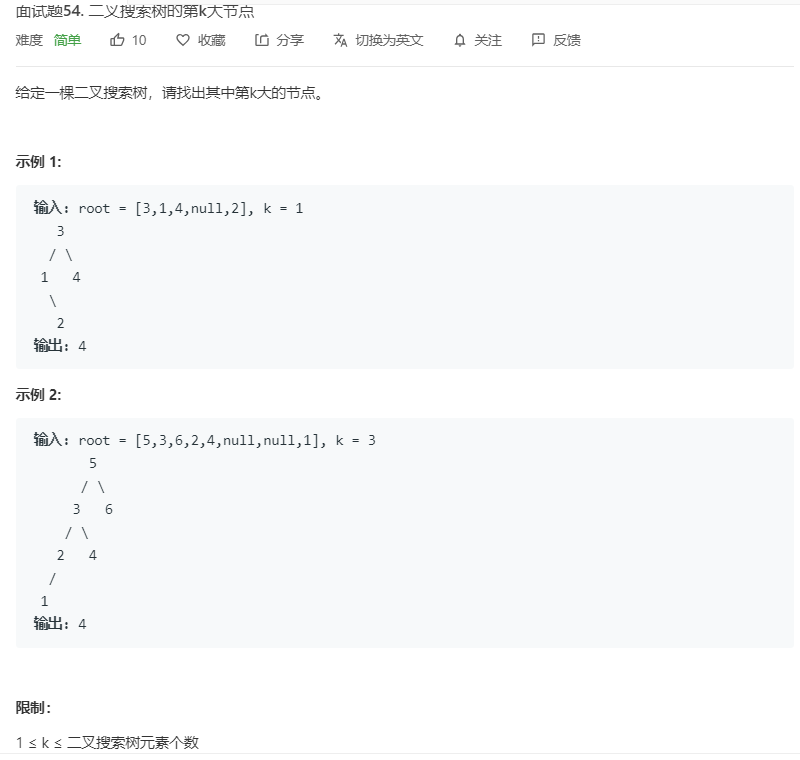

1.相关博客
注意：示例代码中的
TreeNode对象和结构体定义如下：
1 | public class TreeNode { |
1 | struct TreeNode { |
2.简介
- 二叉搜索树
- 不仅可以查找数据，还可以高效地插入、删除数据（即动态维护数据）。
- 堆的二叉树一定是完全二叉树，所以用数组表示很方便。而二叉搜索树不一定是完全二叉树，所以不好用数组表示，通常使用引用的方式表示二叉搜索树节点间的关系。
- 二叉搜索树中的问题：求最小值、最大值、查找一个节点的前驱节点和后继节点，实现 floor、ceil 和 rank 函数、以及支持插入重复节点值的二叉搜索树该如何实现。
- 二叉搜索树的局限性：可能退化成链表，此时二叉搜索树的高度为 n ，时间复杂度退化为
O(n)，还不如顺序查找表（原因：顺序查找表不用递归实现且不需要每次访问两个指针）。它不能像堆一样保证所有的操作一定是O(logn)级别的。
- 平衡二叉树：改进二叉树的实现，使之不能退化成链表。
- 平衡二叉树最著名的实现：红黑树
- 其他平衡二叉树的实现：SBT 树、AVL 树、Splay 树
- 平衡二叉树和堆的结合：Treap
- 树形问题：归并排序、快速排序、搜索树（八皇后）
3.查找最大值或最小值
- 返回以 root 为根节点的二叉搜索树中的最大（小）节点
- Java
1 | public TreeNode findMax(TreeNode root) { |
- 返回以 root 为根节点的二叉搜索树中的最大 （小）节点的节点值
- C
1 | int findMax(struct TreeNode* root) { |
4.删除最大值或最小值
- 删除以 root 为根节点的二叉搜索树中的最大（小）节点，返回删除最大（小）节点后新的二叉搜索树的根。
- 删除最大值：向右走到头，若它是叶子节点则直接删除，若它有左子树，则将左子树赋给其父亲节点（最大值所在的节点只可能有左孩子）
- 删除最小值：向左走到头，若它是叶子节点则直接删除，若它有右子树，则将右子树赋给其父亲节点（最小值所在的节点只可能有右孩子）
- Java
1 | public TreeNode removeMax(TreeNode root) { |
- C
1 | struct TreeNode* removeMax(struct TreeNode* root) { |
5.二叉搜索树中的搜索
- 查找节点的过程：
- 和当前节点值相等，则直接返回
- 小于当前节点值，在左子树中查找
- 大于当前节点值，在右子树中查找
- Java
1 | // 1.尾递归 |
- C
1 | // 1.尾递归 |
6.二叉搜索树中的遍历操作
- 因为二叉搜索树也是一种二叉树，所以它的遍历操作与二叉树的遍历操作相同。
- 具体见：树的遍历（递归加迭代）
7.二叉搜索树中的插入操作
- 插入新节点的过程：
- 和当前节点值相等，则直接返回（假设这种情况不存在）
- 小于当前节点值，在左子树中插入
- 大于当前节点值，在右子树中插入
- Java
1 | // 1.尾递归 |
- C
1 | // 1.尾递归 |
8.删除二叉搜索树中的节点
- 分析：
- 删除只有一个孩子的节点：直接将孩子赋给其父节点
- 删除有两个孩子的节点：找到其右子树中的最小值代替该节点（即该节点的后继节点）
或找到其左子树中的最大值代替该节点（即该节点的前驱节点）。
- 具体做法：先创建一个新节点（值是其后继节点或前驱节点的节点值），再把被删除节点的后继节点或前驱节点在原位置删除，最后将被删除节点的左右子树分别赋值给该新节点。
- 删除二叉搜索树中任意一个节点的时间复杂度为
O(logn) - Java
1 | // 1.用被删除节点的前驱节点(是其左子树中的最大值所在的节点)替换被删除的节点 |
- 具体做法：先将被删除节点的节点值改为其后继节点或前驱节点的节点值，再把被删除节点的后继节点或前驱节点在原位置删除。
- C
1 | // 1.用被删除节点的前驱节点(是其左子树中的最大值所在的节点)替换被删除的节点 |
9.二叉搜索树的第 k 大节点

- Java
1 | // 1.中序遍历二叉搜索树得到升序数列，再找到第k大节点的值。 |
- C
1 | // 1.中序遍历二叉搜索树得到升序数列，再找到第k大节点的值。 |
10.二叉搜索树的范围和
- Java
1 | // 明确题意: 求出所有满足 节点值>=L且节点值<=R 的节点的值的和 |
- C
1 | // 明确题意: 求出所有满足 节点值>=L且节点值<=R 的节点的值的和 |
附录
- 我的个人博客：messi1002.top
- 如有错误或疑惑之处 请联系 wjymessi@163.com
- 关于 数据结构与算法 的更多代码 请查看我的 GitHub仓库